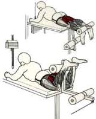
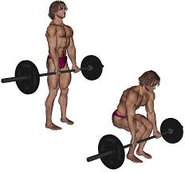
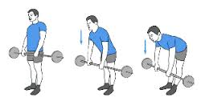
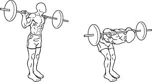

Cet exercice sollicite beaucoup les ischios-jambiers.C’est un exercice d’isolation qui est efficace pour ces muscles mais moins rentable que les exercices poly articulaires comme le soulevé de terre et ses variantes qui vous feront prendre plus de masse aux cuisses. Pour éviter une blessure et offrir le maximum d’équilibre au niveau de l’articulation du genou, la force de vos ischios devra être équivalente à celle des quadriceps. Si vous constatez que ces derniers sont beaucoup plus forts, faites du legs curl unilatéral debout avant de travailler l’avant des cuisses.
Cet exercice de musculation de base développe tout le corps et permet de gagner beaucoup de force. Il travaille les quadriceps, les arrière cuisses, les fessiers, le dos, les mollets, les abdos, les lombaires, les trapèzes et même les avant-bras. Pour certains, il est indispensable si l'on veut se forger un physique solide et massif ; pour d'autres, il est trop risqué et remplaçable par d’autres exercices.
 Cet exercice est très efficace pour solliciter les muscles fessiers (glutéal) et ischios jambiers. Une excellente technique et de la souplesse sont nécessaire pour faire le mouvement.Le soulevé de terre jambes tendues très important pour développer et définir les fessiers et l’arrière de la cuisse. Quand il est fait en amplitude complète, le soulevé de terre jambes tendues améliore la statique du corps en position debout. C’est un exercice important pour les ischios parce qu’il les stimule au niveau de l’articulation de la hanche.
La principale articulation concernée est la hanche, et les principaux muscles impliqués sont les muscles de la région fessière et le groupe musculaire postérieur de la cuisse qui comprend trois muscles : le biceps fémoral, le demi-tendineux et le le semi-membraneux. Le grand fessier est celui sur lequel vous vous asseyez. Le grand fessier naît directement par des fibres charnues ou par de courtes fibres tendineuses. Se pencher en avant en ayant le dos rond surtout si vous avez du poids dans les mains ou sur vos épaules, peut être très dangereux pour votre colonne vertébrale.